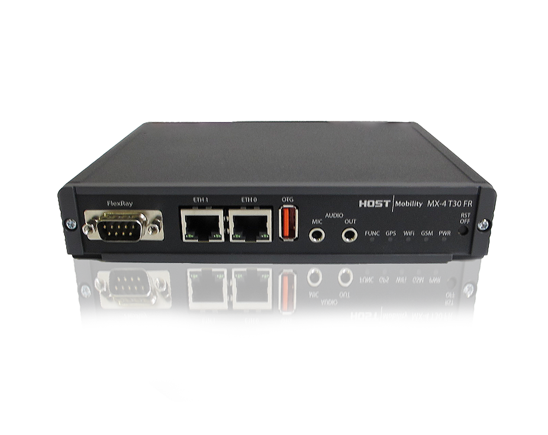
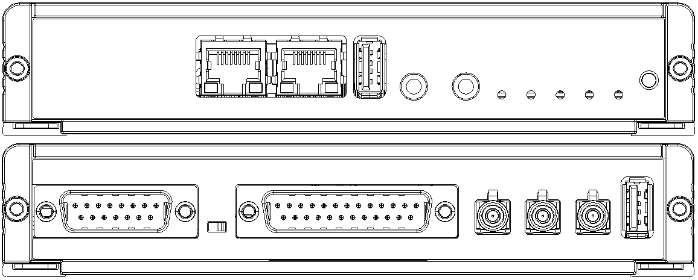

Platform MX-4 T30 FR

Abstract⚓︎
MX-4 T30 FR is a telematics computer for remote diagnostics and fleet management, very well suited for automotive development.
Feature summary for HMP075 (flexray variant)⚓︎
See Product variant definition.
| Feature | Summary |
|---|---|
| CPU (main) | ARM Cortex-A9 CPU, Up to 1.4 GHz, Quad Core |
| Coprocessor | PIC24 |
| RAM | 1GB flash, 1 GB RAM |
| Operating System | Yocto Kirkstone, Linux kernel 6.1 (and 3.1.10) |
| Modem | Europa or USA 4G module |
| GPS | Included in modem, external antenna |
| Aux-Linux | 2x 3pol aux for Linux Headphone L and R and mic |
| WIFI | 802.11 b/g/n WiFi |
| Ethernet | 2x 10BASE-T and 100BASE-TX Ethernet |
| USB | 1 x USB 2.0 high-speed host/device (auto detect) |
| USB | 1 x USB 2.0 high-speed host |
| CAN | 6 x CAN 2.0 B |
| Flexray | 1 x Flexray 2.1 / 2.1RevA |
| LIN | 2 x LIN buses |
| Digital inputs | 6 x Digital inputs |
| Digital outputs | 6 x Digital outputs |
| Analog inputs | 2 x Analog inputs 0-32 VDC (including the start signal) |
| Tachometer | 1x Puls counter |
| Start Signals | 1 x Start signal input (to boot the system using external signal) |
| Buzzer | 1x internal buzzer |
| uSD-card | µSD-card interface |
| SuperCap | Super Capacitor |
| Battery | Internal Lithium battery: 1050mAh, -20 to +60°C (can be removed) |
| Operating Temperature | Wide operating temperature: -40 to +70°C |
| Operating voltage | Wide input voltage range, 8-36 VDC |
| Nominal Voltage | 12-24V |
| Sleep-Mode | Low power sleep mode |
| Real Time Clock | Yes, backed up by coin cell battery |
Product variant definition⚓︎
List of known products⚓︎
Contact Host Mobility. All product variants start with hmp075 (T20, T30, T30 FR).
Connectors and buttons⚓︎

Dsub 15 connector⚓︎
| Pin | Function | Comment |
|---|---|---|
| 1 | CAN-1-H | |
| 2 | CAN-1-L | |
| 3 | CAN-2-H | |
| 4 | CAN-2-L | |
| 5 | CAN-3-H | |
| 6 | CAN-3-L | |
| 7 | INPUT-POWER | Tied to pin 14 |
| 8 | GND | Reference for INPUT-POWER |
| 9 | CAN-4-H | |
| 10 | CAN-4-L | |
| 11 | CAN-5-H | |
| 12 | CAN-5-L | |
| 13 | START-SIGNAL | Must be high for the unit to start, tied to pin 23 in other D-sub |
| 14 | INPUT-POWER | Tied to pin 7 |
| 15 | GND | Reference for INPUT-POWER |
| SH | GND | Shield is also connected to the common GND |
| general-purpose GND |
Dsub 25 connector⚓︎
| Pin | Function | Comment |
|---|---|---|
| 1 | GND | Reference for all I/O and communication buses |
| 2 | CAN-6-H | |
| 3 | CAN-6-L | |
| 4 | DIG-INPUT-1 | Internal pull-up |
| 5 | DIG-INPUT-2 | Internal pull-up |
| 6 | DIG-INPUT-3 | Internal pull-up |
| 7 | DIG-INPUT-4 | Internal pull-up |
| 8 | DIG-INPUT-5 | Internal pull-down |
| 9 | DIG-INPUT-6 | Internal pull-down |
| 10 | PULSE-COUNTER | Input for tachometer |
| 11 | DIG-OUTPUT-5V | Digital 5V output, for peripherals |
| 12 | GND | Reference for all I/O and communication buses |
| 13 | GND | Reference for all I/O and communication buses |
| 14 | LIN-1 | LIN bus 1 |
| 15 | LIN-2 | LIN bus 2 |
| 16 | DIG-OUTPUT-1 | Sourcing current |
| 17 | DIG-OUTPUT-2 | Sourcing current |
| 18 | DIG-OUTPUT-3 | Sourcing current |
| 19 | DIG-OUTPUT-4 | Sourcing current |
| 20 | DIG-OUTPUT-5 | Sinking current |
| 21 | DIG-OUTPUT-6 | Sinking current |
| 22 | ANALOG-IN-1 | 0-32 V input |
| 23 | START-SIGNAL | Must be high for the unit to start, tied to pin 13 in other D-sub |
| 24 | VOLTAGE-OUTPUT | Outputs the input voltage, not controllable, current limited |
| 25 | GND | Reference for all I/O and communication buses |
| SH | GND | Shield is also connected to the common GND |
Dsub 9 Connector⚓︎
| Pin | Function | Comment |
|---|---|---|
| 1 | NC | Not connected |
| 2 | FRAY1-BM | |
| 3 | GND | |
| 4 | NC | Not activated |
| 5 | NC | Not connected |
| 6 | NC | Not connected |
| 7 | FRAY1-BP | |
| 8 | FRAY2-BM | Not activated |
| 9 | NC | Not connected |
Other connector and buttons⚓︎
- Fakra red LTE/4G
- Fakra blue GPS
- RJ45
- Audio & mic
- Reset button
- LEDs
Technical specification⚓︎
Contact support to receive the technical specification (1301-HMP075-*-Technical-description) for this hardware. * is the variant you have bought.